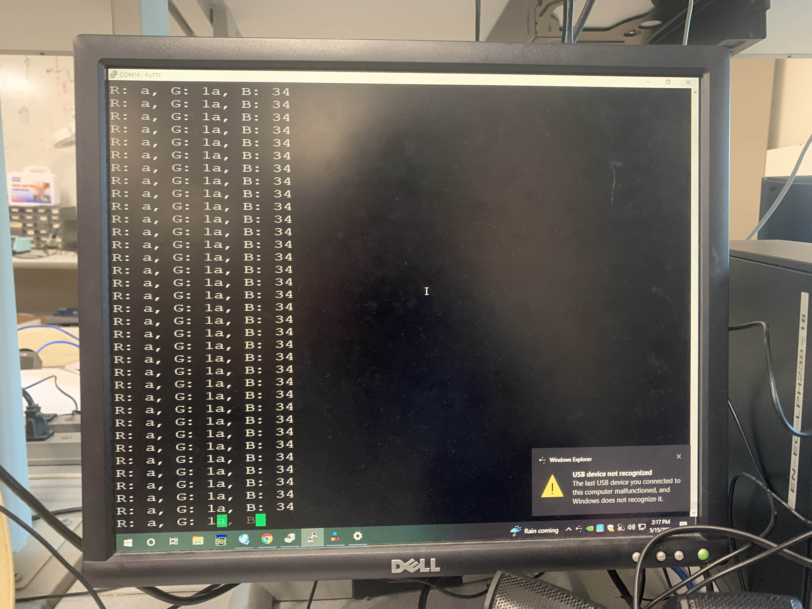
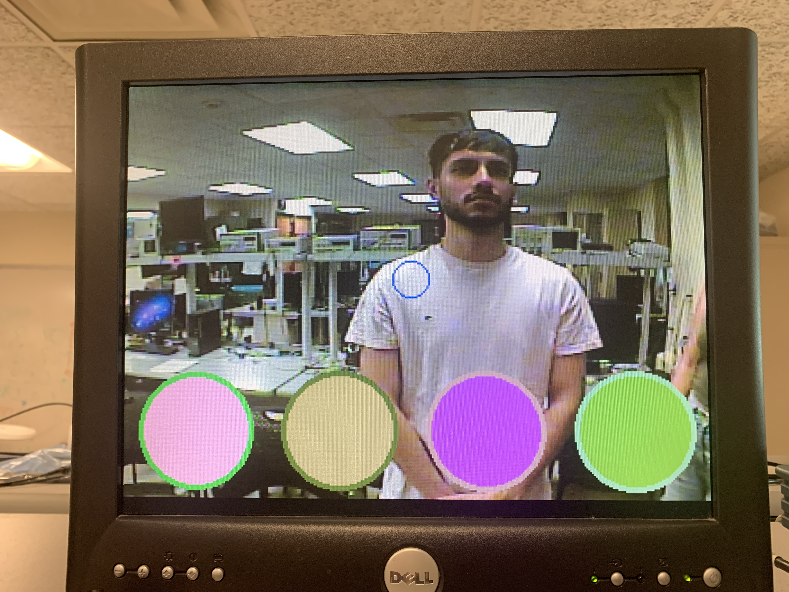
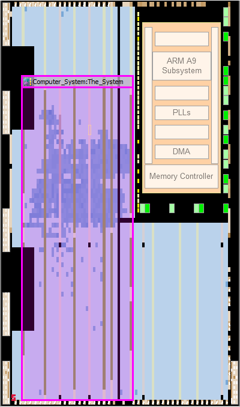

ECE 5760 Final Project: Gesture Based User Interface
Results

Several fascinating results were obtained as an outcome of our successful project. To gain these results, thorough testing and analysis had to be completed in order to pinpoint bugs and resolve issues. Testing the video system (video in and VGA output) was mostly accomplished by trial and error. W developed and tuned several video modules in Qsys such as the chroma resampler, alpha blender, color space converter, RGB resampler, clipper, and scaler until the desired outcomes were reached. For example, to convert incoming YCrCb stream to RGB, we tested different RGB formats (8-bit, 16 bit, 30 bit) and the one that outputted the highest quality stream without taking up too much memory.
One of the most important tests that we ran was checking the amount of blue pixels in a certain spot on the screen to determine if the color detection algorithm on the FPGA actually functions or not. To do this, we drew a small circle on the screen from the HPS as shown in the image below and pointed a blue object such that it would show up inside the circle on the screen. Then, using a debug PIO port from Quartus, we printed the output of the RGB values inside that circle as shown in the image below. As seen, the blue values are clearly larger than the red and the green, implying that the program is able to detect the blue pixels.


Below is an image of the HPS graphics rendering without the camera feed in the background. We generate a number of drums on the screen based on an input into the HPS. For example, inputting 5 will create 5 drums of equal size, spaced evenly across the bottom half of the screen. The drums are formed by overlaying two “VGA_discs,” which creates the rim impression around the drum. The colors of the drum are generated randomly for every compilation.
The image below focuses on the transparency feature of the system. The drums are part of the foreground, and the camera feed sits in the background. The drums are partially transparent, allowing for the background to be visible. The transparency is controlled by a switch on the FPGA board. Also, the FPGA is programmed such that any true black color from the HPS graphics will automatically be fully transparent.
The program also allows for the transparency to be completely turned off as shown in the image below. When a switch on the FPGA board is turned off, it disables the mixing of the video feed and HPS graphics, making the drums opaque.
The team was also able to enable and display images onto the VGA screen via the HPS. The image below shows a transparent photo with three black circles (that became fully transparent).
test
test
test